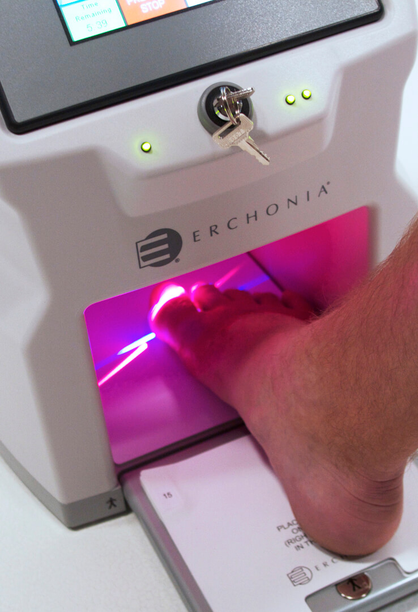

Chiropody and Podiatry
Please choose an option below:
Verrucae
Verrucas are warts located on the feet, caused by viral infection.
We now offer Swift microwave therapy for verrucas.
Swift microwave therapy is the most effective treatment available and is the current gold standard. Treatment is fast and requires no anesthetic.

Swift Treatment Prices
A course of treatments is carried out over 3 appointments, spaced 3-4 weeks apart.
Initial treatment: £350
Additional appointments: £36 or £61 if additional treatment is needed.

Further information on Swift microwave treatment can be found at their website.
Fungal Nail Infections
Fungal nails appear thick, brittle and discoloured
As the infection resides on the skin under the nail, most topical treatments have low success rates - the lacquer cannot penetrate the thick nail.
Traditionally it has been difficult to test for presence a fungal nail infection, though recently a 5 min test has been developed. It is available at our clinic at a cost of £40.
The Lunula Treatment of Nail Infections

We now offer laser treatment of fungal nail infections.
The Lunula treatment involves a cold laser. The safe and painless treatment poses none of the risks and harmful side effects of oral anti-fungal medications.
Treatment causes no side effects and no recovery time is required, meaning you can go straight back to normal activities
The Lunula system has a 97% success rate.

Laser Treatment Prices
Initial treatment: £300
Following three weekly treatments: £36 each
Three monthly follow up: £42
General Chiropody
We run a chiropody clinic at our Bridge Street practice 6 days a week and can also offer home visits and visit various Nursing Homes in and around the Taunton area.
We have 4 practitioners all of whom have completed a 3 year, full-time course and are HCPC registered. We are licensed to use local anaesthetic as necessary. Made-to-measure insoles and appliances can be made on-site.
We are able to treat and offer relief for all the common foot complaints including:
- Fungal infections (e.g. Athelete's foot)
- Thickened toe nails
- Corns, warts, varrucas, blisters and calluses
- Hard, dry, or flaky skin
- Heel pain
- Sprains, dislocations and fractures
- Diabetic ulcers
- Plantar fasciitis
- Club foot
We are able to refer patients for further investigations should it be necessary.
Our aim is to give professional service and comfort.
General Chiropody Prices
Standard chiropody treatment or consultation: £36
Home visits: in Taunton £42, outside Taunton £48
For insoles, casted orthotics, strapping, anaesthetic injections, toenail removal and other treatments, please ring for current prices.
Dermal Filler
As we get older we can loose our natural fatty pads within our feet, leading to corns and pain. Chris, our specialist podiatrist, is able to introduce dermal fillers into the balls of the feet to provide cushioning to both alleviate pain and treat corns.
Please download our Dermal Filler leaflet, or book a consulation for further information.
Dermal Filler Prices
Dermal Filler initial consultation: £36
Dermal Filler treatment: £350 .
Bio-mechanical Assessment
At the Foot and Gait clinic we are interested in the function of the lower limb and the movement of the body. The feet are the foundation of the body and the body pivots over the foot during movement. Malalignments in the feet can be reflected higher up the body causing knee, the hip, the lower back problems.
These discrepancies are repeated thousands of times a day - every step for decades.
The feet are able to form the dual function of being stable enough to take a load and mobile enough to move. They can adapt to all sorts of terrain, they shock absorb and they give propulsion. The foot is beautifully designed to cope with all this if all the joints are functioning properly. Any disruption that alters the way the feet meet or leave the ground sets up a chain of pain and dysfunction.
For 30 years we have been studying and treating foot and gait problems and have pioneered a selection of effective techniques.
We like to have an initial 1 hour appointment. Please come with a selection of worn footwear and a pair of shorts. We assess the mobility of the joints and video the feet in action, either walking or running. The video is slowed down and viewed. From this we decide on a treatment plan. We may make a temporary pair of insoles for you to trial, which will change the angles of the foot during gait. These are tailor-made to your feet on-site for you to try. We can adjust these easily as necessary. Once we are happy with the prescription we can take a cast and make a more permanent pair.
If we decide insoles are not required we may prescribe exercises, stretching regimes, strapping and shoe advice.

Podiatry Prices
Bio-mechanical/musculoskeletal lower limb gait assessment: £155
Orthotics and Presciption Sandals
In the last 12 months a new service has become available. We are able to send your cast to a bespoke sandal maker who can make the an integral part of the sandal.
Hotter Presciption Sandals
Hotter offer a service on several styles of sandal. The sandal is purchased by you and sent with your personal prescription and cast for a removable custom made footbed which can be interchanged with several Hotter styles.
We can even make prescription flip-flops for you.